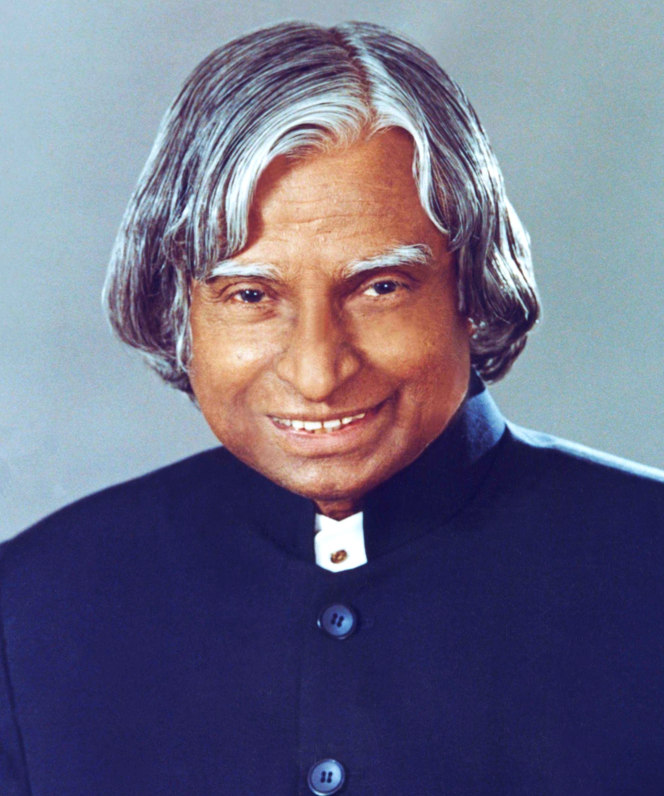

Dr. A.P.J. Abdul Kalam
"The Missile Man of India" and 11th President of India

Dr. Kalam addressing students — he dedicated his post-presidency years to inspiring the youth of India.
Here's a timeline of Dr. Kalam's life:
- 1931 – Born in Rameswaram, Tamil Nadu, India.
- 1954 – Graduated in Physics from St. Joseph's College, Tiruchirappalli.
- 1960 – Completed Aeronautical Engineering at MIT (Madras Institute of Technology).
- 1960 – Joined DRDO.
- 1969 – Moved to ISRO; became Project Director of SLV-III.
- 1980 – SLV-III launched Rohini Satellite into orbit.
- 1982–1992 – Led IGMDP; developed Agni and Prithvi missiles.
- 1998 – Played a key role in Pokhran-II nuclear tests.
- 1998 – Launched Technology Vision 2020.
- 2002–2007 – Served as the 11th President of India.
- Known as the "People's President".
- Refused to sign the Office of Profit Bill in 2006.
- Post-2007 – Returned to teaching, inspiring students across India.
- Authored:
- Wings of Fire
- Ignited Minds
- India 2020
- 2011 – Received Doctor of Science from University of Edinburgh.